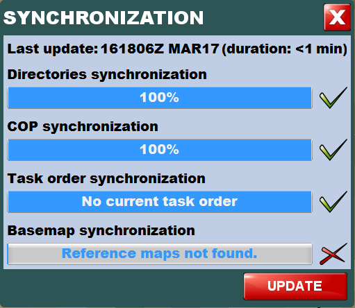
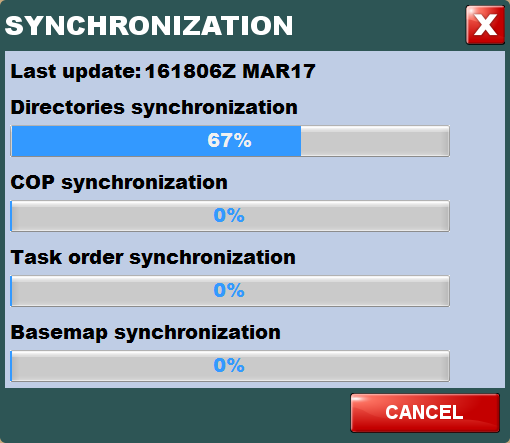
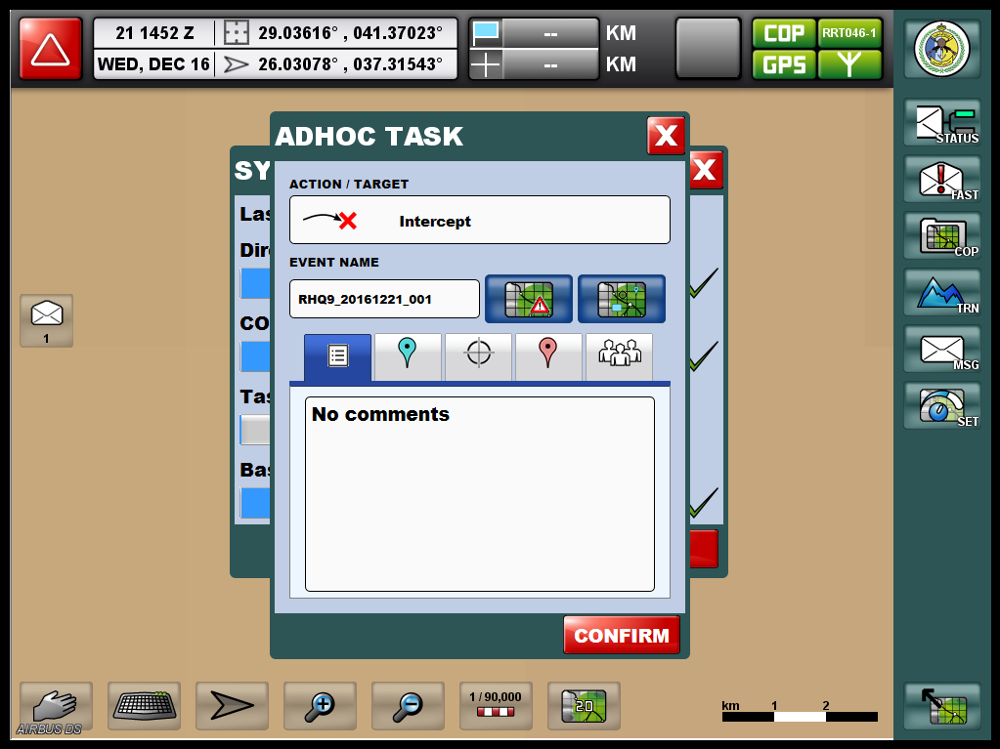
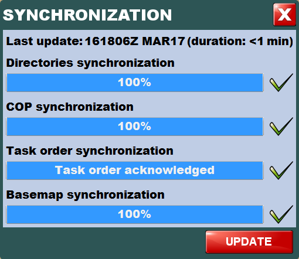

To synchronize on demand the operational data when in docked mode, carry out the following procedure.
| Responsibility | Field Unit Operator |
| Prerequisites | N/A |
-
From the
 menu, press the
button.
menu, press the
button. The [SYNCHRONIZATION] dialog box is displayed, indicating the status of the last synchronization.
Figure: Synchronization window -
A sign indicates an item successfully synchronized, meaning that this item has been downloaded and installed on the application.
-
A sign indicates an item not synchronized.
-
-
Press the [UPDATE] button to launch a new synchronization.
During downloading, a progress bar displays the amount of data currently retrieved.Figure: Start new synchronization If a task order is assigned, it is downloaded so that the Field Unit Operator can acknowledge it.
Figure: Confirmation window for adhoc task A [Synchronization] alert box is displayed when the synchronization has succeeded.
Figure: Synchronization successful If the current task has been closed, it will also be synchronized in docked mode (the task will be ended and removed from Mobile C2 tablet).
Figure: End of synchronization 
-
At any time, press the [CANCEL] button or the [X] button to cancel the current item synchronization.
The following alert box is displayed.
Figure: Synchronization canceled